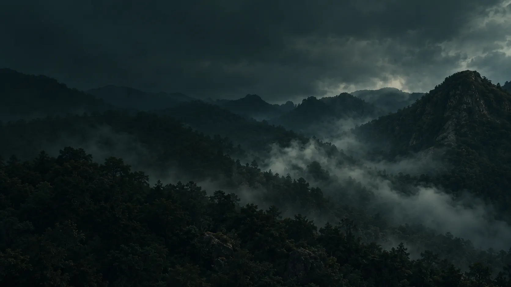
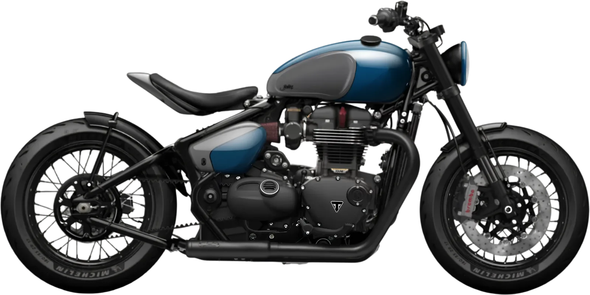
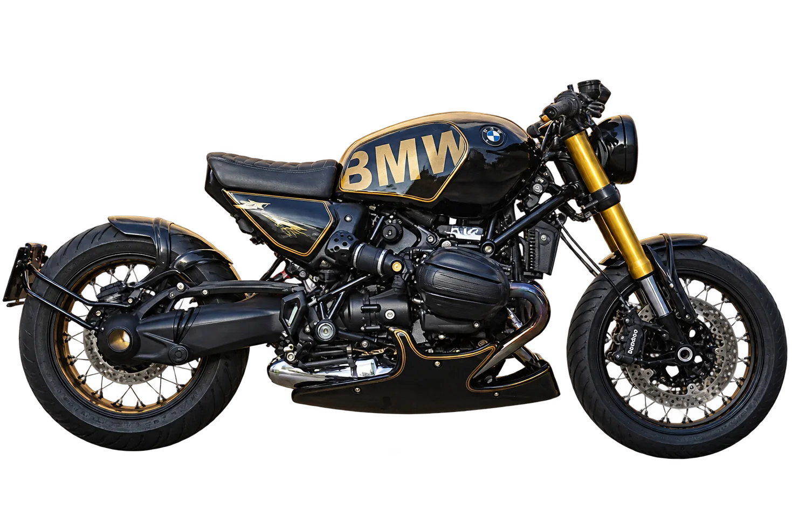
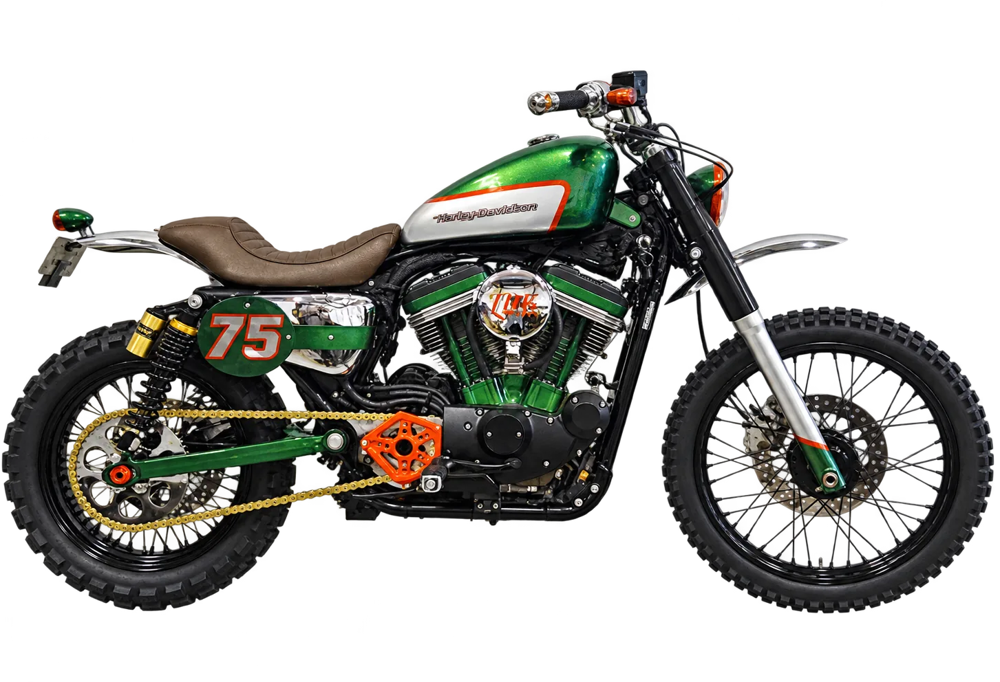
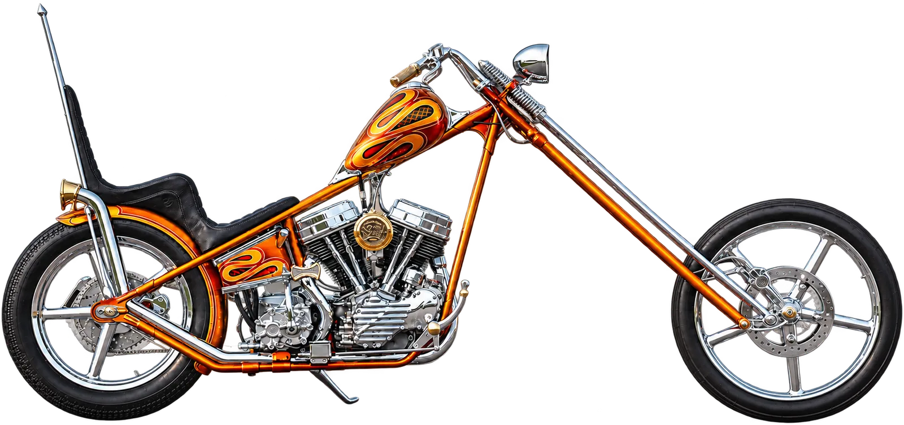
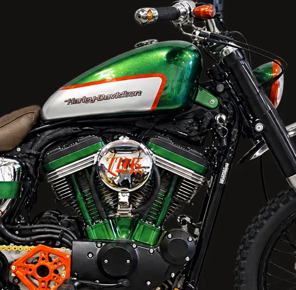
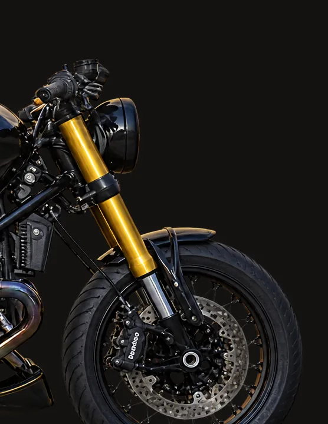
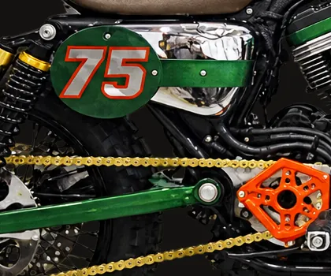
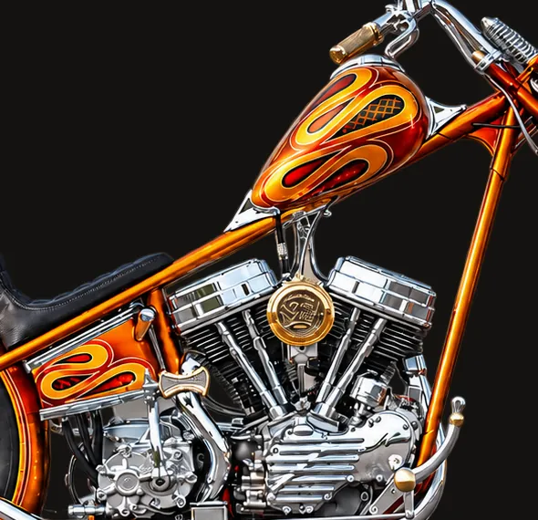

A case study of bikes and of the people who refuse to ride anything ordinary.
Road
Open
Weather
Smoke & fog
Pace
Yours
Scroll to ride in
02 The Philosophy
A motorcycle is not how you get somewhere. It is how you become
someone.
Four wheels shelter you. Two expose you to the weather, to
consequence, to every change in the road surface carried up
through the bars and into your wrists. Nobody rides for
efficiency. They ride because, for as long as the engine turns,
there is nowhere to hide from being alive.
Hardline studies that exposure: the machines people build to meet
it, the craft poured into every bracket and weld, and the quiet,
stubborn individuality of riders who would rather build than buy.

I.
Machine
Steel, fire, and thousands of controlled explosions every
minute. Nothing hidden. Nothing on the bike is only decoration;
it also has to work.
II.
Craft
Somebody chose the angle of that fork. Somebody laid that
pinstripe by hand. A custom motorcycle is a record of a thousand
decisions.
III.
Self
No two riders sit the same way. Give it enough years, and no two
bikes do either.
No two alikeBuilt not boughtNo two alikeBuilt not boughtNo two alikeBuilt not bought
Ride your own lineRide your own lineRide your own lineRide your own lineRide your own line
03 Four Ways to Ride
Same two wheels. Four entirely different
arguments.
How to read the plates: each is a photograph from the Hardline
archive. Field notes describe only what is visible in the image.
Readings are our opinion of the style, not factory figures.
Plate01 / 04

Post-war America → now
Bobber
Less, on purpose.
Riders back from the war took their bikes apart and left the
excess on the garage floor. Fenders were “bobbed”, and anything
that didn’t make the machine faster or lighter was removed.
Today the bobber is the most honest silhouette in motorcycling:
one seat, one rider, nothing to apologise for.
Solo saddle, floating over the frame
Blue tank — the only colour on a blacked-out build
Rear fender cut short, the namesake “bob”
Fat tyres on spoked wheels
Restraint
5 of 5
Pace
2 of 5
Grit
3 of 5
Spectacle
2 of 5

1960s Britain → now
Café Racer
Built for the sprint between coffees.
The rockers of 1960s Britain stripped their bikes, tucked in
behind low bars and raced from café to café. Everything about a
café racer leans forward, as if it is already late for something
it fully intends to win.
Black tank, hand-lined in gold
Gold-finished front forks
Short, flat, stitched seat
Belly pan tucked under the engine
Restraint
3 of 5
Pace
5 of 5
Grit
2 of 5
Spectacle
3 of 5

Dirt ovals → back streets
Tracker
Sideways is a direction.
Born on flat-track ovals, where racers slide through corners on
loose dirt, the tracker borrows the racer’s number plates, wide
bars and long flat seat. It never fully commits to the tarmac,
and it doesn’t want to.
Number 75 side plate, race-style
Long, flat, brown bench seat
Orange sprocket cover
Knobbly tyres made for loose ground
Restraint
2 of 5
Pace
3 of 5
Grit
5 of 5
Spectacle
3 of 5

California, late ’60s → now
Chopper
Practicality was never invited.
Chop the frame, rake the neck, stretch the fork and paint it
like a sunset on fire. The chopper is motorcycling’s loudest
sentence. It is less a vehicle than a declaration that you were
never planning to blend in.
Stretched, steeply raked front fork
Tall sissy bar behind the seat
Flame-painted tank in orange
Chrome engine, fully on show
Restraint
1 of 5
Pace
1 of 5
Grit
2 of 5
Spectacle
5 of 5
Reading — editorial opinion, not factory data
04 The Culture
Nobody builds a bike for someone else.
The machine is half of it. The rest is grease under fingernails,
strangers who nod, and a long argument with yourself about who
you want to be. That argument usually happens on a Sunday
morning, at speed.

i — The Garage
Every bolt is an opinion.
Customisation isn’t decoration. It is the slow work of
removing everything that isn’t you and replacing it with
something that is.
ii — The Road
The road doesn’t care who you are.
That’s the point.

iii — The Pack
Two fingers off the bar.
The nod passed between strangers on two wheels. You don’t know
their name or their bike. You know they chose the same
exposure you did.

iv — The Mark
A number nobody issued.
A colour. A scar on the tank. A plate with a number that means
something to exactly one person. Identity, bolted on.

v — The Hands
Paint you can feel.
Flames laid by a hand that shook only once, and only on
purpose. Craft is the part of the machine that remembers a
person made it.
05 — The Line
Every machine in this study was built by someone who refused the
default.